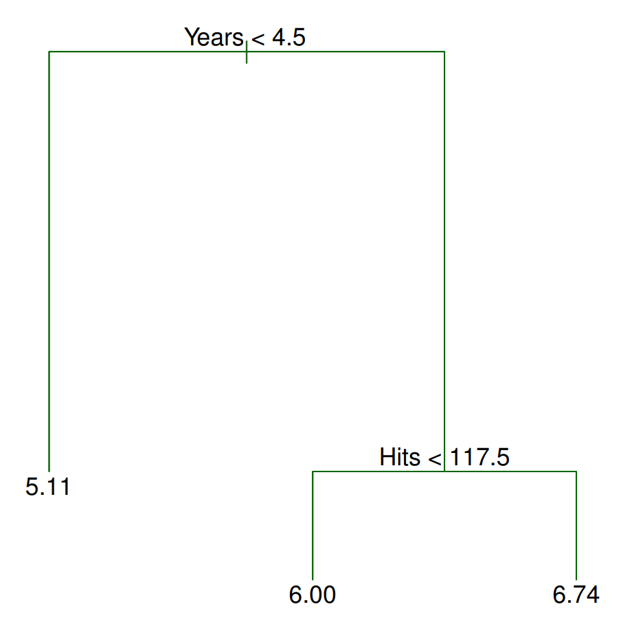
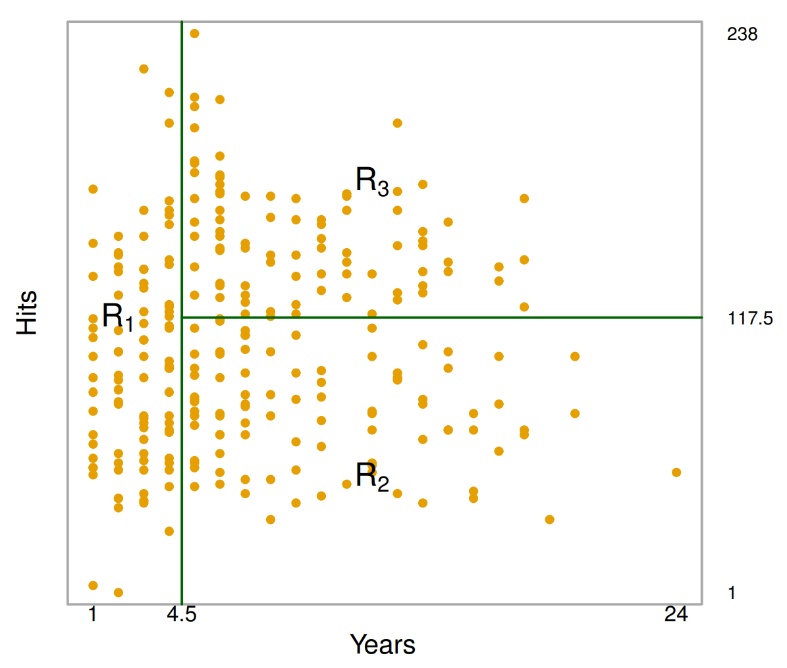
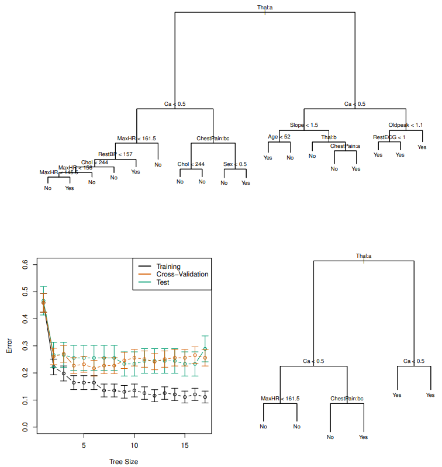

{% include mathjax.html %}
Decision Trees
Decision Trees are a great way to learn patterns in data. They are extremely interpretable, making them a useful tool for communicating findings in data science applications. Moreover, extensions to simpler tree-based methods exist which are competitive in prediction accuracy. We first begin with the basics through an example.
Regression and Classification Trees
Assume we are trying to predict the salary of a baseball player based on two
characteristics: the number of years they played in the major leagues, and the
number of hits they had last season. A possible tree that we might end up
with can be seen in Figure 1. There are two places where the tree is split:
Years<4.5 and Hits<117.5. These are the tree’s internal nodes. Incidentally, we call the
split conditions Years<4.5 and Hits<117.5 ’splitting rules’.

How exactly do we make a prediction given a new observation? Consider a
player named Bob who has played 6 years in the major leagues and got 96 hits
last season. According to the tree, the first split checks whether the number
of years this player has played in the major leagues is less than 4.5. If it is
less than 4.5, we take the left branch, otherwise, the right (you can swap the
right/left directions as long as it is consistent). Since Bob has played greater
than 4.5 years, we take the right branch. Now we arrive at another ‘splitting
rule’ which asks if the number of hits this player got from last season is less
than 117.5. Bob had 96 hits last season; thus, we travel to the left and get to
the terminal or leaf node from which we make our prediction. In this case, we
predict Bob to make \(e^6 * 1000 ≈ 403,429\) dollars.

The next important concept to address is how a tree partitions the predictor
space. Examining Figure 2, we see three regions annotated by R1, R2, R3.
We denote observations within each region as \(y\{R_i\} = \{y_i
: y_i \in R_i\}\). Each of these regions correspond to a terminal node in the tree. Herein lies the key
difference between regression and classification trees: for regression trees, we
take a quantitative statistic such as the mean of all data points within the
region, whereas for classification trees, we take a statistic over qualitative data
such as the mode. For instance, a possible statistic for R1 could be the mean
of all observations that lie in R1, \(\frac{1}{n}\sum_{i=1}^n y_i\)
Pruning
An important question to ask when building a tree is when to stop. Theoretically, a tree can have a terminal node for every single data point in the entire training set and obtain 100% training accuracy; in this case, we will almost certainly overfit to the training set. Pruning is a technique that mitigates this
problem by decreasing the number of terminal nodes by removing branches.
Naturally, we should remove branches such that the error rate increases by a
minimum. One method that accomplishes this is called cost complexity pruning,
which assumes an augmented loss function,
$$\sum_{m=1}^{|T|} \sum_{x_i \in R_m} (y_i - \hat{y}_{R_m})^2 + \alpha |T|$$
where |T| is the number of terminal nodes in the tree, \(R_m\) is the region indexed
by \(m\), \(y_i\) are the training observations, \(\hat{y}_{R_m}\) is the estimate for region \(R_m\) and
\(\alpha\) is a non-negative tuning parameter. The additional \(\alpha\)|T| term penalizes trees
with many terminal nodes, meaning very deep trees will have a higher loss,
despite it having better prediction accuracy on the training set. Since α is not
fixed, it is typical to learn it using cross validation. This is accomplished through
a grid search to identify values of \(\alpha\) which result in a sequence of successively
shallower trees. Then, cross validation can be performed on each individual tree
to determine which is optimal. See Figure 3 for an example of pruning.
Pros vs. Cons of Trees
As mentioned in the beginning, trees are easy to interpret. Furthermore, the
way trees make predictions is thought to mirror human decision-making. Trees
can also be displayed graphically, a desirable trait for presentations in real world applications. Despite these advantages, trees suffer from lower prediction accuracy, high variance, and lack of robustness (a small change in the data leads to a big change in the resulting tree). See this article if you are interested in learning about extensions to tree-based methods which address these problems.
